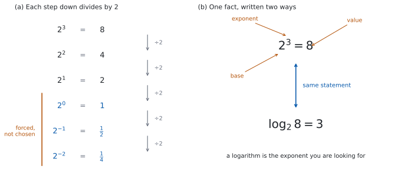

SL 1.5 — Laws of exponents and introduction to logarithms（整数の指数法則と、対数のはじまり）
- laws of exponents（指数法則）を、整数の指数で使える。
- \(a^{0} = 1\) と \(a^{-n} = \dfrac{1}{a^{n}}\) が、なぜそうなるのかを説明できる。
- \((2x)^{4}\) と \(2x^{-3}\) のように、係数と文字がまざった形を正しく扱える。
- 公式集の \(a^{x} = b \iff x = \log_{a} b\) を、両方向に使える。
- 底が \(10\) の対数（\(\log\)）と、底が \(e\) の対数（\(\ln\)）が読める。
- \(\log_{a} b\) の値を、\(b\) を \(a\) の累乗に直して手で出せる。
The idea
1. 指数は「何回掛けるか」
\(a^{n}\) は、\(a\) を \(n\) 個掛けたものです。
\[ 2^{3} = 2 \times 2 \times 2 = 8 \]
この読み方から、いちばん大事な法則がそのまま出てきます。\(2^{3} \times 2^{4}\) を、掛ける回数で数えてみます。
\[ \underbrace{(2 \times 2 \times 2)}_{3 \text{ 個}} \times \underbrace{(2 \times 2 \times 2 \times 2)}_{4 \text{ 個}} = \underbrace{2 \times \cdots \times 2}_{7 \text{ 個}} = 2^{7} \]
\(3\) 個と \(4\) 個を並べたら \(7\) 個です。ですから、指数は足し算になります。
\[ 2^{3} \times 2^{4} = 2^{3+4} = 2^{7} \]
\(2^{3} \times 5^{4}\) は、\(10^{7}\) にはなりません。同じ数を掛けているわけではないからです。
指数を足したり引いたりできるのは、底（下の数）が同じときだけだと覚えてください。
（表 1 の下の \(2\) つ、積の累乗と商の累乗は、底がちがっても使えます。そちらでそろっているのは、指数のほうだからです。）
\(2^{3} \times 5^{4} = 8 \times 625 = 5000\) で、\(10^{7} = 10\,000\,000\) とはまるでちがいます。
2. 指数法則
整数の指数で使う法則は、次の \(5\) つです。
| 法則 | 式 | 覚え方 |
|---|---|---|
| 積 | \(a^{m} \times a^{n} = a^{m+n}\) | 掛けたら、指数は足す |
| 商 | \(\dfrac{a^{m}}{a^{n}} = a^{m-n}\)（\(a \neq 0\)） | 割ったら、指数は引く |
| 累乗の累乗 | \(\left(a^{m}\right)^{n} = a^{mn}\) | 重ねたら、指数は掛ける |
| 積の累乗 | \((ab)^{n} = a^{n} b^{n}\) | かっこの中の全部に配る |
| 商の累乗 | \(\left(\dfrac{a}{b}\right)^{n} = \dfrac{a^{n}}{b^{n}}\)（\(b \neq 0\)） | 上にも下にも配る |
商の法則は、積の法則から出ます。\(\dfrac{2^{5}}{2^{3}}\) を書き出すと、
\[ \frac{2 \times 2 \times 2 \times 2 \times 2}{2 \times 2 \times 2} = 2 \times 2 = 2^{2} \]
下の \(3\) 個が、上の \(3\) 個を消しました。残るのは \(5 - 3 = 2\) 個です。
3. \(a^{0} = 1\) と、負の指数
「\(0\) 回掛ける」「\(-2\) 回掛ける」は、そのままでは意味が分かりません。では、どう決めればよいのでしょうか。
答えは、商の法則が使えるように決めるです。
\[ \frac{2^{3}}{2^{3}} = 2^{3-3} = 2^{0} \]
左辺は \(\dfrac{8}{8} = 1\) です。ですから \(2^{0} = 1\) と決めるほかありません。
同じように、
\[ \frac{2^{3}}{2^{5}} = 2^{3-5} = 2^{-2} \]
左辺は \(\dfrac{8}{32} = \dfrac{1}{4}\) です。ですから \(2^{-2} = \dfrac{1}{4} = \dfrac{1}{2^{2}}\) です。
| 指数 | \(3\) | \(2\) | \(1\) | \(0\) | \(-1\) | \(-2\) |
|---|---|---|---|---|---|---|
| \(2^{n}\) | \(8\) | \(4\) | \(2\) | \(1\) | \(\dfrac{1}{2}\) | \(\dfrac{1}{4}\) |

表 2 を右へ進むと、毎回 \(2\) で割っています。\(8 \to 4 \to 2 \to 1 \to \dfrac{1}{2} \to \dfrac{1}{4}\) です。\(1\) のところで止める理由がありませんから、その先も自然に決まります。
まとめると、
\[ a^{0} = 1, \qquad a^{-n} = \frac{1}{a^{n}} \qquad (a \neq 0) \tag{1}\]
\(2^{-2} = \dfrac{1}{4}\) です。\(-4\) でも \(-\dfrac{1}{4}\) でもありません。
マイナスは「逆数にせよ」という合図であって、符号を変える合図ではありません。\(a > 0\) なら、\(a^{-n}\) もつねに正です。
4. 係数と文字がまざったとき
かっこがあるかどうかで、まるで違う式になります。
\((2x)^{4}\) は、かっこの中の全部が \(4\) 乗されます（表 1 の積の累乗）。
\[ (2x)^{4} = 2^{4} x^{4} = 16 x^{4} \]
いっぽう \(2x^{-3}\) には、かっこがありません。\(-3\) が付いているのは \(x\) だけです。
\[ 2x^{-3} = 2 \times \frac{1}{x^{3}} = \frac{2}{x^{3}} \]
\[ 2x^{-3} = \frac{2}{x^{3}}, \qquad (2x)^{-3} = \frac{1}{(2x)^{3}} = \frac{1}{8x^{3}} \]
\(x = 1\) を入れると、前者は \(2\)、後者は \(\dfrac{1}{8}\) です。まったく別の値です。
指数は、すぐ左のものだけに付きます。 かっこがあれば、かっこ全体に付きます。
5. 対数は、指数を取り出す
\(2^{x} = 8\) という式を見たら、\(x = 3\) だとすぐ分かります。では \(2^{x} = 10\) はどうでしょうか。\(x\) は \(3\) より少し大きい数のはずですが、名前がありません。
（この項目であつかうのは整数の指数です。\(x\) が整数でないときの \(2^{x}\) の意味は、SL 1.7a で決めます。ここでは「そういう数がある」とだけ認めてください。）
そこで、名前を付けます。 これが logarithm（対数）です。
\[ a^{x} = b \iff x = \log_{a} b \tag{2}\]
公式集の 1.5 の欄に Exponents and logarithms として印刷されています。条件も、そのまま書かれています。
\(a^{x} = b \iff x = \log_{a} b\), where \(a > 0\), \(b > 0\), \(a \neq 1\)
シラバスの Guidance 欄にも、同じことが書かれています。
Awareness that \(a^x = b\) is equivalent to \(\log_ab = x\), that \(b > 0\), and \(\log_e x = \ln x\).
読み方は、いつも同じです。
\(\log_{a} b\) は、「\(a\) を何乗したら \(b\) になるか」という数。
ですから \(\log_{2} 8 = 3\) です。\(2\) を \(3\) 乗すると \(8\) になるからです。
式 2 の \(\iff\) は、両向きに使えるという意味です。指数の式を対数の式に、対数の式を指数の式に、いつでも書きかえられます。
| 指数の形 | 対数の形 |
|---|---|
| \(3^{4} = 81\) | \(\log_{3} 81 = 4\) |
| \(10^{-2} = 0.01\) | \(\log_{10} 0.01 = -2\) |
| \(5^{0} = 1\) | \(\log_{5} 1 = 0\) |
6. 底が \(10\) と、底が \(e\)
シラバスで名前が付いているのは、この \(2\) つです。
底が \(10\) のとき、底を書かずに \(\log b\) と書くことがあります。\(\log 1000 = 3\) です。桁数と結びつくので、地震のマグニチュードや音の大きさ（デシベル）に使われます。
底が \(e\) のとき、\(\log_{e} b\) を \(\ln b\) と書きます。これが公式集とシラバスの書き方です。
\[ \log_{e} x = \ln x \tag{3}\]
\(e\) は \(2.718\ldots\) と続く数で、\(\pi\) と同じように、名前で呼ぶ以外にありません。いまの段階では「決まった \(1\) つの数」だと思っておけば十分です。
\(e > 0\) なので、第 5 節 の条件がそのまま当てはまります。\(\ln 0\) や \(\ln(-3)\) も、定義されません。
定義から、次の \(2\) つはすぐ出ます。どちらもよく使います。
\[ \log_{a} 1 = 0, \qquad \log_{a} a = 1 \tag{4}\]
\(a^{0} = 1\) と \(a^{1} = a\) を、式 2 で書きかえただけです。
7. 手で出す対数と、電卓
\(\log_{a} b\) が整数になるのは、\(b\) が \(a\) の整数乗のときです。ですから、手で出すときは必ず
\(b\) を \(a\) の累乗に書きかえる
から始めます。\(\log_{2} 32\) なら、\(32 = 2^{5}\) と書きかえて、答えは \(5\) です。
\(\log_{3} \dfrac{1}{9}\) なら、\(\dfrac{1}{9} = \dfrac{1}{3^{2}} = 3^{-2}\) と書きかえて、答えは \(-2\) です（式 1）。
シラバスには、こう書かれています。
Numerical evaluation of logarithms using technology.
TI-Nspire なら、\(\log\) のテンプレートに底を入れる小さい欄があるので、そこに \(a\) を入れます。\(\log\) も \(\ln\) も、テンプレート一覧（ctrl + x² のカタログ、または ctrl + 10ˣ / ctrl + eˣ）から出せます。キーの位置は機種で少しちがうので、自分の電卓で一度確かめておいてください。
Paper 1 では使えません。 ですから、このページの例題と演習はすべて手で出せる形にしてあります。\(b\) が \(a\) の累乗になっているかを、まず見てください。
Why it works
\(a^{0} = 1\) も \(a^{-n} = \dfrac{1}{a^{n}}\) も、決め方は \(1\) 通りしかありません。 第 2 節 の法則を、指数が \(0\) や負のときにも成り立たせようとすると、それしか選べなくなるのです。
商の法則 \(\dfrac{a^{m}}{a^{n}} = a^{m-n}\) を認めるなら、\(a \neq 0\) のもとで \(m = n\) とおいて
\[ 1 = \frac{a^{m}}{a^{m}} = a^{m-m} = a^{0} \]
\(a^{0}\) を \(1\) 以外の何かにすると、この行が壊れます。
\(m = 0\) とおけば、負の指数も出ます。
\[ a^{-n} = a^{0-n} = \frac{a^{0}}{a^{n}} = \frac{1}{a^{n}} \]
対数のほうも、新しい計算ではありません。 表 3 の左と右は、同じ事実を別の場所から見ているだけです。指数の式は「\(3\) 乗したらいくつ」と値をたずね、対数の式は「いくつになるのは何乗か」と指数をたずねます。
ですから、対数の問題で行きづまったら、まず指数の形に書きかえてください。 ほとんどの場合、それだけで見通しがよくなります。
\(\log_{9} 81\) が分からなければ、\(9^{x} = 81\) と書きます。\(9^{1} = 9\)、\(9^{2} = 81\) ですから、\(x = 2\) です。
Worked examples
問題文は英語です。意味が理解できなかったら、問題文の下の「日本語訳」を開いてください。解説は日本語です。
例題も演習も、すべて電卓なしで解けます。 Paper 1 のつもりで解いてください。
例題 1 Simplify each expression, giving each answer as a single power.
(a) \(3^{5} \times 3^{-8}\)
(b) \(\dfrac{7^{6}}{7^{2}}\)
(c) \(\left(4^{-2}\right)^{3}\)
(d) \(\dfrac{2^{5} \times 2^{-3}}{2^{-4}}\)
日本語訳
次の式を簡単にし、答えを \(1\) つの累乗の形で書きなさい。
(a) \(3^{5} \times 3^{-8}\)
(b) \(\dfrac{7^{6}}{7^{2}}\)
(c) \(\left(4^{-2}\right)^{3}\)
(d) \(\dfrac{2^{5} \times 2^{-3}}{2^{-4}}\)
(a) 掛け算なので、指数を足します（表 1）。
\[ 3^{5} \times 3^{-8} = 3^{5 + (-8)} = 3^{-3} \]
(b) 割り算なので、指数を引きます。
\[ \frac{7^{6}}{7^{2}} = 7^{6-2} = 7^{4} \]
(c) 累乗の累乗なので、指数を掛けます。
\[ \left(4^{-2}\right)^{3} = 4^{(-2) \times 3} = 4^{-6} \]
(d) 上をまとめてから、下を引きます。
\[ \frac{2^{5} \times 2^{-3}}{2^{-4}} = \frac{2^{2}}{2^{-4}} = 2^{2 - (-4)} = 2^{6} \]
検算（(a) について）。 分数に直して確かめます。\(3^{-8} = \dfrac{1}{3^{8}}\) なので、
\[ \frac{3^{5}}{3^{8}} = \frac{1}{3^{3}} = 3^{-3} \]
合いました ✓ これは指数を足さない別の道すじです。
検算（(d) について）。 すべて値に直します。\(2^{5} = 32\)、\(2^{-3} = \dfrac{1}{8}\)、\(2^{-4} = \dfrac{1}{16}\) です。
\[ \frac{32 \times \frac{1}{8}}{\frac{1}{16}} = \frac{4}{\frac{1}{16}} = 4 \times 16 = 64 \]
\(2^{6} = 64\) ✓ 指数どうしの足し算・引き算を使わずに、値だけで確かめました。
\(2 - (-4)\) を \(2 - 4\) としていたら \(2^{-2} = \dfrac{1}{4}\) となり、\(64\) とはまるでちがいます。下の指数が負のときは、引き算のマイナスと二重になるので、いちばん間違えやすいところです。
(a) \(3^{5} \times 3^{-8} = 3^{-3}\)
(b) \(\dfrac{7^{6}}{7^{2}} = 7^{4}\)
(c) \(\left(4^{-2}\right)^{3} = 4^{-6}\)
(d) \(\dfrac{2^{5} \times 2^{-3}}{2^{-4}} = \dfrac{2^{2}}{2^{-4}} = 2^{6}\)
例題 2 (a) Write \((5x)^{3}\) in the form \(ax^{n}\).
(b) Write \(6x^{-2}\) using a positive exponent only.
(c) Simplify \(\dfrac{15a^{4}b^{-2}}{3a^{-1}b}\), giving your answer with positive exponents only.
(d) Explain why \(6x^{-2}\) and \((6x)^{-2}\) are not equivalent.
日本語訳
(a) \((5x)^{3}\) を、\(ax^{n}\) の形で書きなさい。
(b) \(6x^{-2}\) を、負の指数を使わない形で書きなさい。
(c) \(\dfrac{15a^{4}b^{-2}}{3a^{-1}b}\) を簡単にし、正の指数だけを使って書きなさい。
(d) \(6x^{-2}\) と \((6x)^{-2}\) が同じ式ではない理由を説明しなさい。
(a) かっこの中の全部が \(3\) 乗されます（第 4 節）。
\[ (5x)^{3} = 5^{3} x^{3} = 125 x^{3} \]
(b) \(-2\) が付いているのは \(x\) だけです。
\[ 6x^{-2} = \frac{6}{x^{2}} \]
(c) 数、\(a\)、\(b\) を別々にまとめます。
\[ \frac{15}{3} = 5, \qquad \frac{a^{4}}{a^{-1}} = a^{4-(-1)} = a^{5}, \qquad \frac{b^{-2}}{b^{1}} = b^{-3} \]
\[ \frac{15a^{4}b^{-2}}{3a^{-1}b} = 5a^{5}b^{-3} = \frac{5a^{5}}{b^{3}} \]
(d) Explain why なので、英語で理由を書きます。
試験ではこう書く
In \(6x^{-2}\) the exponent \(-2\) applies only to \(x\), because there are no brackets, so \(6x^{-2} = \dfrac{6}{x^{2}}\). In \((6x)^{-2}\) the brackets mean that the whole product \(6x\) is raised to the power \(-2\), so \((6x)^{-2} = \dfrac{1}{(6x)^{2}} = \dfrac{1}{36x^{2}}\). Substituting \(x = 1\) gives \(6\) for the first expression and \(\dfrac{1}{36}\) for the second, so they are not equal.
（\(6x^{-2}\) ではかっこがないので、指数 \(-2\) は \(x\) だけに付き、\(\dfrac{6}{x^{2}}\) になる。\((6x)^{-2}\) ではかっこがあるので、積 \(6x\) 全体が \(-2\) 乗され、\(\dfrac{1}{36x^{2}}\) になる。\(x = 1\) を入れると前者は \(6\)、後者は \(\dfrac{1}{36}\) で、等しくない、という意味です。）
検算（(c) について）。 \(a = 2\)、\(b = 3\) を入れて、もとの式と答えの式の両方を計算します。
\(1\) は何乗しても \(1\) なので、\(a = 1\) を入れると \(a^{5}\) でも \(a^{3}\) でも同じ値になります。指数のまちがいを、そのまま見のがします。
もとの式は
\[ \frac{15 \times 2^{4} \times \frac{1}{9}}{3 \times \frac{1}{2} \times 3} = \frac{\frac{240}{9}}{\frac{9}{2}} = \frac{80}{3} \times \frac{2}{9} = \frac{160}{27} \]
答えの式は \(\dfrac{5 \times 2^{5}}{3^{3}} = \dfrac{160}{27}\) ✓ \(a\) の指数を \(3\) とまちがえていたら \(\dfrac{40}{27}\) で、合いません。
(a) \((5x)^{3} = 125x^{3}\)
(b) \(6x^{-2} = \dfrac{6}{x^{2}}\)
(c) \(\dfrac{15a^{4}b^{-2}}{3a^{-1}b} = 5a^{5}b^{-3} = \dfrac{5a^{5}}{b^{3}}\)
(d) Without brackets the exponent applies only to \(x\), so \(6x^{-2} = \dfrac{6}{x^{2}}\). With brackets it applies to \(6x\), so \((6x)^{-2} = \dfrac{1}{36x^{2}}\). At \(x = 1\) these give \(6\) and \(\dfrac{1}{36}\).
例題 3 (a) Write \(2^{6} = 64\) in logarithmic form.
(b) Write \(\log_{3} 243 = 5\) in exponential form.
(c) Find the value of \(\log_{5} 625\).
(d) Find the value of \(\log_{2} \dfrac{1}{32}\).
日本語訳
(a) \(2^{6} = 64\) を、対数の形で書きなさい。
(b) \(\log_{3} 243 = 5\) を、指数の形で書きなさい。
(c) \(\log_{5} 625\) の値を求めなさい。
(d) \(\log_{2} \dfrac{1}{32}\) の値を求めなさい。
(a) 式 2 で、\(a = 2\)、\(x = 6\)、\(b = 64\) です。
\[ \log_{2} 64 = 6 \]
(b) 同じ式を逆向きに読みます。\(a = 3\)、\(b = 243\)、\(x = 5\) です。
\[ 3^{5} = 243 \]
(c) \(625\) を \(5\) の累乗に書きかえます（第 7 節）。\(5^{2} = 25\)、\(5^{3} = 125\)、\(5^{4} = 625\) です。
\[ \log_{5} 625 = \log_{5} 5^{4} = 4 \]
(d) \(\dfrac{1}{32}\) を \(2\) の累乗に書きかえます。\(32 = 2^{5}\) なので、\(\dfrac{1}{32} = 2^{-5}\) です（式 1）。
\[ \log_{2} \frac{1}{32} = \log_{2} 2^{-5} = -5 \]
検算（(c) について）。 答えを指数の形に戻します。\(\log_{5} 625 = 4\) なら \(5^{4} = 625\) のはずです。\(5^{2} = 25\)、\(25^{2} = 625\) ✓ \(5\) を \(4\) 回掛ける代わりに、\(2\) 乗を \(2\) 回にしました。別の道すじです。
検算（(d) について）。 答えが負であることが、まず正しいかを見ます。\(\dfrac{1}{32}\) は \(1\) より小さく、\(2^{0} = 1\) です。\(2\) の累乗が \(1\) より小さくなるのは指数が負のときだけなので、\(-5\) という符号は正しい向きです ✓
\(\log_{2} \dfrac{1}{32}\) を \(5\) と答えていたら、\(2^{5} = 32\) であって \(\dfrac{1}{32}\) ではないので、指数の形に戻したところで合いません。
(a) \(\log_{2} 64 = 6\)
(b) \(3^{5} = 243\)
(c) \(\log_{5} 625 = \log_{5} 5^{4} = 4\)
(d) \(\log_{2} \dfrac{1}{32} = \log_{2} 2^{-5} = -5\)
例題 4 (a) Find the value of \(\log 100\,000\), where the base is \(10\).
(b) Find the value of \(\ln e^{7}\).
(c) Solve the equation \(10^{x} = 0.001\).
(d) Explain why \(\log_{4}(-16)\) is not defined.
日本語訳
(a) \(\log 100\,000\) の値を求めなさい（底は \(10\) です）。
(b) \(\ln e^{7}\) の値を求めなさい。
(c) \(10^{x} = 0.001\) を解きなさい。
(d) \(\log_{4}(-16)\) が定義されない理由を説明しなさい。
(a) \(100\,000 = 10^{5}\) です。
\[ \log 100\,000 = \log_{10} 10^{5} = 5 \]
(b) \(\ln\) は底が \(e\) の対数です（式 3）。
\[ \ln e^{7} = \log_{e} e^{7} = 7 \]
(c) \(0.001 = \dfrac{1}{1000} = \dfrac{1}{10^{3}} = 10^{-3}\) です。
\[ 10^{x} = 10^{-3} \ \Rightarrow \ x = -3 \]
(d) Explain why なので、英語で理由を書きます。
試験ではこう書く
By definition, \(\log_{4}(-16)\) would be the number \(x\) with \(4^{x} = -16\). Since \(4 > 0\), any product of copies of \(4\) is positive, and \(4^{-n} = \dfrac{1}{4^{n}}\) is the reciprocal of a positive number, so it is positive too. Hence \(4^{x} > 0\) for every \(x\), and no value of \(x\) satisfies \(4^{x} = -16\). This is why the definition of \(\log_{a} b\) requires \(b > 0\), and so \(\log_{4}(-16)\) is not defined.
（定義により、\(\log_{4}(-16)\) は \(4^{x} = -16\) をみたす \(x\) のはずである。\(4 > 0\) なので、\(4^{x}\) はつねに正である。正の指数なら大きな正の値、\(4^{0} = 1\)、負の指数なら \(4^{-1} = \dfrac{1}{4}\) のような正の分数になる。したがって \(4^{x}\) が負になることはなく、\(4^{x} = -16\) をみたす \(x\) は存在しない。これが \(\log_{a} b\) で \(b > 0\) を要求する理由である、という意味です。）
検算（(c) について）。 答えを、もとの式に入れ直します。\(10^{-3} = \dfrac{1}{10^{3}} = \dfrac{1}{1000} = 0.001\) ✓
\(0.001\) の \(0\) を数えまちがえるのが、この形でいちばん多い誤りです。\(0.1 = 10^{-1}\)、\(0.01 = 10^{-2}\)、\(0.001 = 10^{-3}\) と、\(1\) つずつ確かめてください。
(a) \(\log 100\,000 = \log_{10} 10^{5} = 5\)
(b) \(\ln e^{7} = 7\)
(c) \(10^{x} = 10^{-3}\), so \(x = -3\)
(d) \(4^{x}\) is positive for every \(x\), since \(4 > 0\). So \(4^{x} = -16\) has no solution and \(\log_{4}(-16)\) is not defined. The definition of \(\log_{a} b\) requires \(b > 0\).
Common errors
\(a^{m} \times a^{n}\) は \(a^{m+n}\) です。\(a^{mn}\) になるのは \(\left(a^{m}\right)^{n}\) のほうです（表 1）。
\(2^{2} \times 2^{3} = 4 \times 8 = 32 = 2^{5}\) です。\(2^{6} = 64\) ではありません。
小さい数で試せば、どちらか迷ったときにすぐ決まります。
\(\dfrac{a^{m}}{a^{n}} = a^{m-n}\) の \(n\) が負なら、引き算のマイナスと、指数のマイナスが二重になります。
\[ \frac{2^{2}}{2^{-4}} = 2^{2-(-4)} = 2^{6} = 64 \]
\(2 - 4 = -2\) としてしまうと \(\dfrac{1}{4}\) で、\(64\) とはまるでちがいます。かっこを書いてから引くのが確実です。
係数 \(2\) は、指数の外にいます（第 4 節）。分母に落ちるのは \(x^{3}\) だけです。
\[ 2x^{-3} = \frac{2}{x^{3}} \]
\(x = 1\) を入れてみてください。 もとの式は \(2\)、正しい答えも \(2\)、誤答は \(\dfrac{1}{2}\) です。
\(3^{-2} = \dfrac{1}{9}\) です。\(-9\) でも \(-\dfrac{1}{9}\) でもありません（第 3 節）。
答えの符号だけでも見てください。 底が正なら、累乗は必ず正です。
\(\log_{2} 8 = 3\) です。\(\log_{8} 2\) は、これとは別の数です（\(3\) ではありません）。「\(8\) を \(3\) 乗すると \(2\)」は正しくないからです。
下に小さく書いてあるほうが底で、「何乗するか」を聞かれている数です。
迷ったら、式 2 で指数の形に戻してください。\(2^{3} = 8\) は正しく、\(8^{3} = 2\) は正しくありません。
\(\log_{a} 0\)、\(\log_{a}(-4)\)、\(\ln(-1)\) は、定義されません（第 5 節）。
答案には undefined または not defined と書き、なぜかを一行添えてください。 定義から \(b > 0\) が要るからです。
Exercises
各問題に、折りたたみが \(3\) つ付いています。日本語訳、解答例（答案用紙に書くべきこと。英語です）、解説（なぜそうなるか。日本語です）。
まず自分で解いて、次に解答例と見くらべてください。解説は、合わなかったときだけ開けば十分です。
1 Simplify \(3^{7} \times 3^{-5}\), giving your answer as an integer.
日本語訳
\(3^{7} \times 3^{-5}\) を簡単にし、答えを整数で書きなさい。
\[3^{7} \times 3^{-5} = 3^{7 + (-5)} = 3^{2} = 9\]
底が同じなので、指数を足します（表 1）。\(7 + (-5) = 2\) です。
検算。 分数に直します。\(3^{-5} = \dfrac{1}{3^{5}}\) なので、\(\dfrac{3^{7}}{3^{5}}\) です。書き出すと、下の \(5\) 個が上の \(5\) 個を消して、\(3 \times 3 = 9\) が残ります ✓ 指数を足さない別の道すじです。
\(3^{7} \times 3^{-5}\) を \(3^{-35}\) としていたら、掛け算と累乗の累乗を取りちがえています。\(3^{-35}\) は \(1\) よりずっと小さい数で、\(9\) とはまるでちがいます。
2 Write each expression as a single power.
(a) \(\dfrac{5^{4}}{5^{7}}\)
(b) \(\left(2^{-3}\right)^{-2}\)
日本語訳
次の式を、\(1\) つの累乗の形で書きなさい。
(a) \(\dfrac{5^{4}}{5^{7}}\)
(b) \(\left(2^{-3}\right)^{-2}\)
(a) \[\frac{5^{4}}{5^{7}} = 5^{4-7} = 5^{-3}\]
(b) \[\left(2^{-3}\right)^{-2} = 2^{(-3) \times (-2)} = 2^{6}\]
(a) 割り算なので指数を引きます。\(4 - 7 = -3\) です。
(b) 累乗の累乗なので指数を掛けます。負どうしの掛け算なので、正になります。
検算。
(a) 書き出して消します。\(\dfrac{5^{4}}{5^{7}}\) は、上に \(5\) が \(4\) 個、下に \(7\) 個です。上の \(4\) 個が下の \(4\) 個を消して、下に \(3\) 個だけ残ります。\(\dfrac{1}{5^{3}} = 5^{-3}\) ✓ 指数を引く計算をしていません。
(b) 中から順に値にします。\(2^{-3} = \dfrac{1}{8}\) で、これを \(-2\) 乗するので
\[ \left(\frac{1}{8}\right)^{-2} = \frac{1}{\left(\frac{1}{8}\right)^{2}} = \frac{1}{\frac{1}{64}} = 64 \]
\(2^{6} = 64\) ✓ 指数どうしを掛けていません。
(b) で \(2^{-6}\) としていたら、符号を掛け忘れています。\(2^{-6} = \dfrac{1}{64}\) で、\(64\) とは逆数の関係です。
3 Write each expression using positive exponents only.
(a) \(7x^{-4}\)
(b) \((3x)^{-2}\)
日本語訳
次の式を、正の指数だけを使って書きなさい。
(a) \(7x^{-4}\)
(b) \((3x)^{-2}\)
(a) \[7x^{-4} = \frac{7}{x^{4}}\]
(b) \[(3x)^{-2} = \frac{1}{(3x)^{2}} = \frac{1}{9x^{2}}\]
かっこがあるかどうかだけの違いです（第 4 節）。
(a) かっこがないので、\(-4\) が付いているのは \(x\) だけです。\(7\) は上に残ります。
(b) かっこがあるので、\(3x\) 全体が \(-2\) 乗されます。\(3^{2} = 9\) が分母に出ます。
検算。 \(x = 2\) を入れます。\(x = 1\) は避けます（例題 \(2\) の検算のとおりです）。
(a) もとの式は \(7 \times 2^{-4} = \dfrac{7}{16}\)、答えの式も \(\dfrac{7}{2^{4}} = \dfrac{7}{16}\) ✓ \(\dfrac{1}{7x^{4}}\) としていたら \(\dfrac{1}{112}\) で、合いません。
(b) もとの式は \((3 \times 2)^{-2} = \dfrac{1}{36}\)、答えの式も \(\dfrac{1}{9 \times 4} = \dfrac{1}{36}\) ✓
かっこの有無だけを比べたいなら、\(x = 2\) で \(7x^{-4} = \dfrac{7}{16}\) と \((7x)^{-4} = \dfrac{1}{14^{4}}\) を見くらべてください。けたがまるでちがいます。
4 Simplify \(\dfrac{20a^{6}b^{-1}}{5a^{2}b^{-3}}\), giving your answer with positive exponents only.
日本語訳
\(\dfrac{20a^{6}b^{-1}}{5a^{2}b^{-3}}\) を簡単にし、正の指数だけを使って書きなさい。
\[\frac{20}{5} = 4, \qquad \frac{a^{6}}{a^{2}} = a^{4}, \qquad \frac{b^{-1}}{b^{-3}} = b^{-1-(-3)} = b^{2}\]
\[\frac{20a^{6}b^{-1}}{5a^{2}b^{-3}} = 4a^{4}b^{2}\]
数、\(a\)、\(b\) を別々にまとめるのが確実です。
\(b\) のところが関門です。\(-1 - (-3) = -1 + 3 = 2\) で、正になります。
検算。 \(a = 3\)、\(b = 2\) を入れます。\(a = 1\) は避けます（例題 \(2\) の検算のとおりです）。もとの式は
\[ \frac{20 \times 3^{6} \times \frac{1}{2}}{5 \times 3^{2} \times \frac{1}{8}} = \frac{7290}{\frac{45}{8}} = 7290 \times \frac{8}{45} = 1296 \]
答えの式は \(4 \times 3^{4} \times 2^{2} = 4 \times 81 \times 4 = 1296\) ✓
\(b^{-4}\) としていたら、引き算のかっこを外しそこねています。\(4 \times 81 \times \dfrac{1}{16} = \dfrac{81}{4}\) となり、\(1296\) とはまるでちがいます。
5 (a) Write \(4^{3} = 64\) in logarithmic form.
(b) Write \(\log_{6} 36 = 2\) in exponential form.
日本語訳
(a) \(4^{3} = 64\) を、対数の形で書きなさい。
(b) \(\log_{6} 36 = 2\) を、指数の形で書きなさい。
(a) \[\log_{4} 64 = 3\]
(b) \[6^{2} = 36\]
式 2 を、そのまま両向きに使うだけです。底は動きません。 動くのは指数と値の位置です。
検算。 書きかえた式が正しいかを、値で見ます。
(a) \(\log_{4} 64 = 3\) は「\(4\) を \(3\) 乗すると \(64\)」と読めます。\(4 \times 4 \times 4 = 64\) ✓
(b) 書いた式を、もう一度対数の形に読み戻します。\(6^{2} = 36\) は「\(6\) を \(2\) 乗すると \(36\)」なので、式 2 では \(\log_{6} 36 = 2\) です。出発した式に戻りました ✓
底と値を入れかえて \(\log_{64} 4 = 3\) としていたら、「\(64\) を \(3\) 乗すると \(4\)」という意味になります。\(64^{3}\) は \(4\) よりずっと大きいので、合いません。
6 Find the value of each logarithm.
(a) \(\log_{7} 49\)
(b) \(\log_{2} \dfrac{1}{16}\)
(c) \(\log 0.0001\), where the base is \(10\)
日本語訳
次の対数の値を求めなさい。
(a) \(\log_{7} 49\)
(b) \(\log_{2} \dfrac{1}{16}\)
(c) \(\log 0.0001\)（底は \(10\) です）
(a) \[\log_{7} 49 = \log_{7} 7^{2} = 2\]
(b) \[\log_{2} \frac{1}{16} = \log_{2} 2^{-4} = -4\]
(c) \[\log 0.0001 = \log_{10} 10^{-4} = -4\]
どれも、中の数を底の累乗に書きかえるだけです（第 7 節）。
(b) \(16 = 2^{4}\) なので \(\dfrac{1}{16} = 2^{-4}\) です（式 1）。
(c) \(0.0001 = \dfrac{1}{10\,000} = \dfrac{1}{10^{4}} = 10^{-4}\) です。
検算。 すべて指数の形に戻します。
(a) \(7^{2} = 49\) ✓ (b) \(2^{-4} = \dfrac{1}{16}\) ✓ (c) \(10^{-4} = 0.0001\) ✓
符号の見当も付けられます。 (b) と (c) は、どちらも中の数が \(1\) より小さいので、答えは負のはずです。正の数を書いていたら、その時点でおかしいと分かります。
7 Solve each equation.
(a) \(10^{x} = 1\,000\,000\)
(b) \(e^{x} = \dfrac{1}{e^{5}}\)
日本語訳
次の方程式を解きなさい。
(a) \(10^{x} = 1\,000\,000\)
(b) \(e^{x} = \dfrac{1}{e^{5}}\)
(a) \[10^{x} = 10^{6} \ \Rightarrow \ x = 6\]
(b) \[e^{x} = e^{-5} \ \Rightarrow \ x = -5\]
両辺を、同じ底の累乗の形にそろえるのが基本の手です。そろえば、指数どうしを比べるだけになります。
(a) \(1\,000\,000\) は \(0\) が \(6\) 個なので \(10^{6}\) です。
(b) \(\dfrac{1}{e^{5}} = e^{-5}\) です（式 1）。
検算。 答えを、もとの式に入れ直します。
(a) \(0\) を数え直さずに、掛けて作ります。\(10^{3} = 1000\) で、\(1000 \times 1000 = 1\,000\,000\) です ✓ \(x = 7\) としていたら \(10\,000\,000\) となり、けたが \(1\) つ多くなります。
(b) \(e^{-5} = \dfrac{1}{e^{5}}\) ✓ \(e\) の値を知らなくても確かめられます。 \(e\) が何であれ、指数の形が同じなら等しいからです。
(b) を \(5\) と答えていたら、\(e^{5}\) と \(\dfrac{1}{e^{5}}\) が逆です。\(e > 1\) なので、\(e^{5}\) は大きな数、\(\dfrac{1}{e^{5}}\) は小さな数です。
8 On a certain scale, the magnitude \(M\) of an earthquake of amplitude \(A\) is
\[ M = \log\left(\frac{A}{A_{0}}\right) \]
where the base is \(10\) and \(A_{0}\) is a fixed reference amplitude.
(a) Earthquake P has an amplitude \(A = 10\,000 A_{0}\). Find the magnitude of P.
(b) Earthquake Q has an amplitude \(100\) times that of P. Find the magnitude of Q.
(c) Hence find the increase in magnitude from P to Q.
日本語訳
ある尺度では、振幅 \(A\) のゆれの規模 \(M\) が上の式で与えられます（底は \(10\)、\(A_{0}\) は決まった基準の振幅です）。
(a) ゆれ P の振幅は \(A = 10\,000 A_{0}\) です。P の規模を求めなさい。
(b) ゆれ Q の振幅は、P の \(100\) 倍です。Q の規模を求めなさい。
(c) P から Q への規模の増加を求めなさい。
(a) \[M = \log\left(\frac{10\,000 A_{0}}{A_{0}}\right) = \log 10\,000 = \log 10^{4} = 4\]
(b) \[A = 100 \times 10\,000 A_{0} = 10^{6} A_{0}, \qquad M = \log 10^{6} = 6\]
(c) The magnitude increases by \(2\).
\(A_{0}\) が約分で消えるので、残るのは「基準の何倍か」だけです。
(b) \(100 = 10^{2}\) なので、\(10^{2} \times 10^{4} = 10^{6}\) です（表 1）。
検算。 (c) を、(a)(b) を使わずに出します。振幅が \(100\) 倍になると、\(\log\) の中身は \(10^{2}\) 倍です。\(10\) の累乗が \(10^{2}\) 倍になると、指数は \(2\) 増えます。ですから \(M\) は \(2\) 増えます ✓ \(4\) と \(6\) を引き算する道すじとは別です。
これが対数の目的でもあります。\(1\) 倍から \(1\,000\,000\) 倍までの広い範囲が、\(0\) から \(6\) までの扱いやすい数になります。
(b) を \(400\) としていたら、\(M\) を \(100\) 倍しています。\(100\) 倍になるのは \(A\) のほうであって、\(M\) ではありません。
9 Explain why \(\log_{a} 1 = 0\) for every base \(a\) with \(a > 0\) and \(a \neq 1\).
日本語訳
\(a > 0\)、\(a \neq 1\) であるどんな底 \(a\) についても \(\log_{a} 1 = 0\) となる理由を説明しなさい。
By definition, \(\log_{a} 1\) is the exponent \(x\) for which \(a^{x} = 1\). Since \(a > 0\), the quotient \(\dfrac{a^{m}}{a^{m}}\) equals \(1\), and the quotient law gives \(\dfrac{a^{m}}{a^{m}} = a^{m-m} = a^{0}\), so \(a^{0} = 1\). Hence \(x = 0\), and \(\log_{a} 1 = 0\). No particular value of \(a\) was used, so this holds for every base with \(a > 0\) and \(a \neq 1\).
Explain why なので、定義に戻って、一本の道すじで書きます（式 2）。
「\(a\) を何乗したら \(1\) になるか」→ \(0\) 乗、で終わりです。
検算。 \(a^{0} = 1\) を使わずに確かめます。\(\dfrac{2^{3}}{2^{3}}\) は、値では \(\dfrac{8}{8} = 1\) です。商の法則では \(2^{3-3} = 2^{0}\) です。同じ式なので \(2^{0} = 1\) ✓
底を \(10\) にしても同じです。\(\dfrac{1000}{1000} = 1\) と \(10^{3-3} = 10^{0}\) ✓ 示したい \(a^{0} = 1\) を仮定せずに出しているのが要です。
「\(a \neq 1\) が必要なのはなぜか」も、ついでに考えてみてください。\(a = 1\) だと \(1^{x}\) はどんな \(x\) でも \(1\) なので、\(\log_{1} 1\) の値が \(1\) つに決まりません。だから底から外してあります。
試験ではこう書く
The expression \(\log_{a} 1\) means the exponent \(x\) such that \(a^{x} = 1\). Since \(a > 0\), the quotient \(\dfrac{a^{m}}{a^{m}}\) is equal to \(1\), and the quotient law of exponents rewrites the same quotient as \(a^{m-m} = a^{0}\). Therefore \(a^{0} = 1\) for every \(a > 0\). Hence \(x = 0\) satisfies \(a^{x} = 1\), and so \(\log_{a} 1 = 0\). The argument uses no particular value of \(a\), so it holds for every base with \(a > 0\) and \(a \neq 1\).
10 A student is asked to simplify \(\dfrac{3^{8}}{3^{2}}\) and writes
\[ \frac{3^{8}}{3^{2}} = 3^{4} \]
Identify the error, and write down the correct answer as a single power of \(3\).
日本語訳
ある生徒が \(\dfrac{3^{8}}{3^{2}}\) を簡単にするように言われ、上のように書きました。
誤りを指摘し、正しい答えを \(3\) の \(1\) つの累乗の形で書きなさい。
The student divided the exponents instead of subtracting them. The quotient law is \(\dfrac{a^{m}}{a^{n}} = a^{m-n}\).
\[\frac{3^{8}}{3^{2}} = 3^{8-2} = 3^{6}\]
Identify the error なので、どこが違うのかを名指ししてから、正しい答えを書きます。
生徒は \(8 \div 2 = 4\) をしています。正しくは \(8 - 2 = 6\) です（表 1）。
検算。 小さい数で、同じ形を試します。\(\dfrac{2^{4}}{2^{2}} = \dfrac{16}{4} = 4 = 2^{2}\) です。生徒の方法なら \(2^{4 \div 2} = 2^{2}\) となり、この例では偶然合ってしまいます。
そこで、割り切れない組で試します。\(\dfrac{2^{5}}{2^{2}} = \dfrac{32}{4} = 8 = 2^{3}\) です。生徒の方法なら \(2^{5 \div 2} = 2^{2.5}\) となり、合いません ✓ 「たまたま合う例」を避けて試すのが要です。
試験ではこう書く
The student divided the exponents, writing \(8 \div 2 = 4\), but the quotient law for exponents requires them to be subtracted: \(\dfrac{a^{m}}{a^{n}} = a^{m-n}\). The correct working is \(\dfrac{3^{8}}{3^{2}} = 3^{8-2} = 3^{6}\). The method can be tested on a small case: \(\dfrac{2^{5}}{2^{2}} = \dfrac{32}{4} = 8 = 2^{3}\), which agrees with subtracting the exponents but not with dividing them.